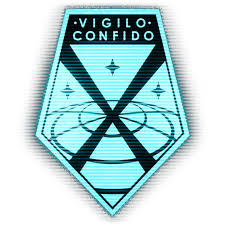
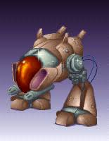
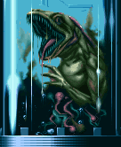
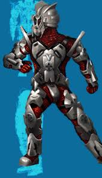
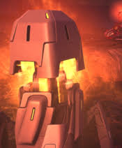
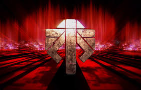

Which alien has made an appearance in every XCOM game?
Answer:
Which terror unit is associated with Ethereals in X-COM: UFO Defense?
Answer:
What replaced psionics in X-COM: Terror From the Deep?
Answer:
What is the name of the police force in X-COM: Apocalypse?
Answer:
What device allows you to capture aliens in XCOM: Enemy Unknown?

Answer:
What resource allows you to genetically modify soldiers in XCOM: Enemy Within?
Answer:
What is the name of the alien peacekeeping force in XCOM 2?
Answer:
Your score: 0/7 (0%)